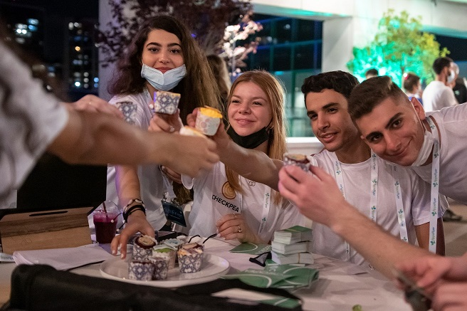
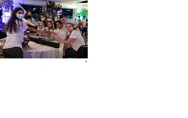
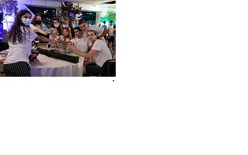
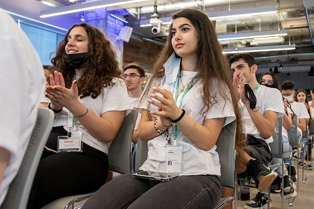
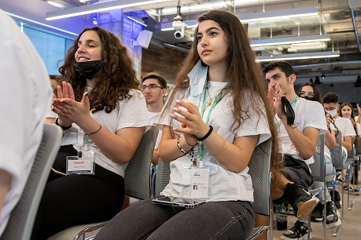
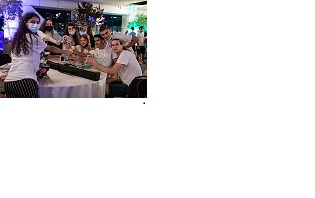
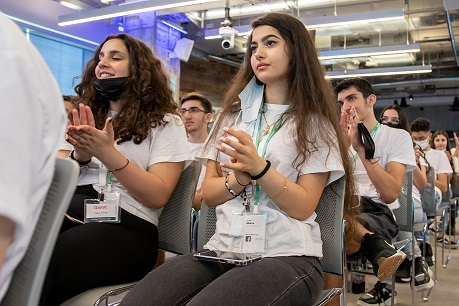

I am a third-year Software Engineering student at Bethlehem University with a strong passion for coding, entrepreneurship, and leadership. Born and raised in Bethlehem my family origin is from Greece, and I am eager to develop my skills in the tech world. In addition to my studies, I have a variety of hobbies, including painting, playing chess, and sports. I joined a specialized program for three years that focuses on coding, entrepreneurship, and leadership, and it has broadened my knowledge significantly.

.jpeg) 

.jpg) 





Meera Baraskiva Baraskiwan
Bethlehem - Jerusalem Hebron Street . (+970) 569 200 102 . meera.paraskiva@gmail.com
Experience
As part of my academic journey, I had the opportunity to visit Facebook's headquarters in Tel Aviv twice (in 2019 and 2021) for pitching my statrup idea and discussing it with experts. Additionally, I pitched a startup called Chickpea at AppsFlyer for investors with my team, which is focused on helping users manage their diet. During this project, I worked as a UX designer and UI developer, gaining invaluable experience in design, development, and team collaboration, plus i had the opportunity to find a new feature for the ben and jerries icecrem website and pitched it with my team for the ceo of ben and jerries.
Education
I am currently pursuing a Software Engineering degree at Bethlehem University. This program has provided me with a solid foundation in computer science, programming, and software development.I have also had the chance to attend workshops and seminars related to entrepreneurship and leadership .
Skills
- Coding: Java, Python, JavaScript.
- Web Development: Experience with HTML, CSS.
- UX/UI Design: Knowledgeable in user research, prototyping, and visual design tools like Figma .
- Entrepreneurship: Experience in launching and pitching startups.
- Leadership: Led teams in both academic and project settings.
Interests
My professional interests are focused on software development, particularly in web and mobile applications. I am also passionate about user experience design and entrepreneurship. Outside of technology, I enjoy painting plus i took part in some exibitions in my school , playing chess, and participating in various sports, and i was a ballering and performed on stages .
Awards
- 2016: FRENCH DELF A1 as i took 99% and was awarded the first student in my section.
- 2019:FRENCH DELF A2
- 2019: TOFEL WITH SCORE OF 4 OUT OF 5.
- 2021: MEET certificate in entrepreneurship , leadership and programming .
Contact
Feel free to reach out to me through the following channels:
- Phone: (+970) 569 200 102
- Email: meera.paraskiva@gmail.com
- LinkedIn: My LinkedIn